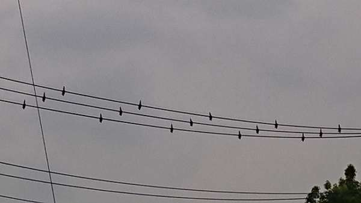

棚から七夕
七夕の星として有名なのが織り姫のベガ（こと座）
牛飼いの彦星のアルタイル（わし座）
そして二人の橋渡し役カササギのデネブ（はくちょう座）
天の川を舞台に壮大な物語です
二人にとって大事なのは橋渡し役のカササギです
二人のために働く第三者です
これによって二人の物語は動き出すのです
トライアングルです大きなトライアングルです
立体的に言うなれば3Dです
そして時空を超えて夜空を見上げ物語にふけるのです
皆の希望 願い 祈りを込めれば4Dです
2020/07/18 before-flight
僕は違うよ
散歩の時に見かけた鳥は
地上の遙か上の 街頭で
優雅に下界を見下ろしていた
人間にはない能力だね 日常の能力だね
何を見ているのかな？
何かを探しているのかな？
前にテレビで見た
南米に生息するコンドルは
翼幅3ｍ 体重15kgもあるんだって
彼等はほとんど羽ばたかず(1%位)に
5時間以上滞空していられるんだって
上昇気流を使って大空を舞う
風使いの名手だね
だから なんとなく君の飛び立ちを見たかったよ
また今度ﾙ見せてね
2020/07/29 sunbeams
木漏れ日は ささやく
ひと時を楽しませてくれた やさしい光
絶え間なく 溢れてくる 流れてくる
光の一粒一粒を 気付かせてくれる
本当は昔から変わらないのだろう
その 一粒の光
宇宙の始まりに時が出来たのなら
物質としての光が
見えない時を 優しく現わしているのだろうか
光は直進すると言われているけど
時も直進しかしないのだろうか
時を逆行する素粒子があれば
人類の誕生 地球や宇宙の元も現われるかも知れない
おぉ 木漏れ日よ
ささやかな ひと時を 現わしてくれる
2020/08/12 peoples
ダイバーシティな人々
昔は皆で1つの太陽を見て
1つの話題で持ちきりで
寄らば大樹の陰
赤信号 皆で渡れば怖くない
エントロピーが増大し
世界は秩序から無秩序へ
あるいは より複雑系へ流れるのか
その流れからすると
多様化や個性化、細分化は必然で
人々はより単純で基本的な所で
喜び合い 悲しみ合う
生まれて 寝て 起きて 食って 死ぬ
人々の利用可能なエネルギー形態のうちに
2020/08/23 densen
螺旋的発展？
普段何気なく見ている電線だけど
今、話題のStarlink衛星を思い出してしまった
地上の電線も より多くの人々にエネルギーを届け
今度のStarlink衛星通信網は公私の状況知識文化を乗せて
多くの人々の活動エネルギーになるのだろう
これもヘーゲルの事物の螺旋的発展の法則の１つだろうか
地球周回軌道で地球を網羅するネットワーク
恩恵も網羅して欲しいね地球人のために
2020/08/30 playground
土が恋しくなる時期(とき)
土の時代を経て 砂利、石時代
アスファルトの時代
未来は 何の時代だろう
薄くても地層になるのだろうか
ヒト科ヒト族ヒト属の中の ホモ・サピエンス・サピエンス
自分の分類でさえ よく分らない
デジタル情報が山ほどあるから 大丈夫かな
でも ヒトがうっかり滅びちゃったら
次に台頭してくる生命にとっては
ヒトの痕跡そのものが文化圏外だろう
そしてまた 土の時代が来るのかな